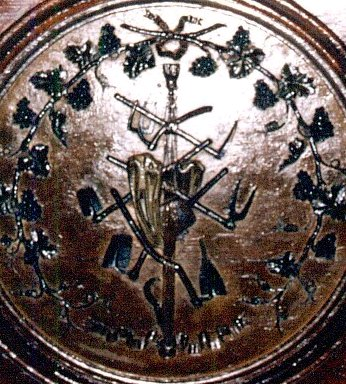
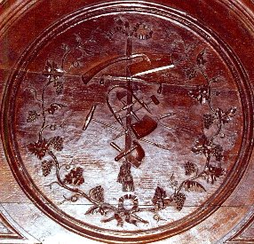
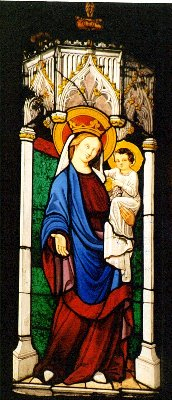
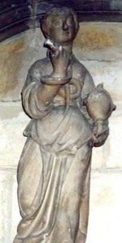
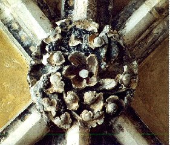

Emblema VI.
revu le 6 octobre 2002
Seminate aurum vestrum in terram albam foliatam.1
(Semez votre or dans la terre blanche feuillée.)
Les paysans à la grasse terre2 livrent leur grain
Lorsqu’avec leurs râteaux ils l’ont bien feuilletée.
Les sages ont transmis l’art de répandre l’or
En la neige des champs tels que des feuilles minces.
Pour faire ainsi, regarde bien : vivant miroir
Le froment saura t’enseigner comme l’or germe.
FUGA VI
DISCOURS VI.Platon dit que la cité se compose, non du médecin et du médecin, mais du médecin et de l’agriculteur, c’est-à-dire d’hommes aux fonctions diverses. Il fait surtout mention du médecin et de l’agriculteur, car leurs œuvres sont particulièrement remarquables sous le rapport de l’imitation, de l’amélioration et du perfectionnement de la nature. L’un et l’autre en effet prennent le sujet naturel, auquel ils ajoutent, selon leur art, certaines choses nécessaires qui faisaient défaut, ou encore en ôtent le superflu. Leur art à tous deux peut en conséquence être défini (de même que la médecine par Hippocrate) comme l’adjonction de ce qui manque et la soustraction du superflu. L’agriculteur fait-il rien de plus, en effet, que d’ajouter au champ laissé par la nature le labourage, la lyration, le hersage, l’engrais ou fumure, l’ensemencement et le reste ? Ne confie-t-il pas l’accroissement et le développement à la nature qui fournit la chaleur du soleil et la pluie, multiplie, par ce moyen, les semences et les amène bientôt à l’état de récoltes bonnes à être coupées ? Entre temps, comme l’herbe pousse en abondance, il enlève les tribules et tout ce qui fait obstacle, il moissonne les récoltes mûres, ôte à ce qu’il a moissonné le superflu, c’est-à-dire la baie, la paille et autres choses du même genre. De même le médecin lui aussi (et assurément, le chimiste, à un point de vue différent) s’est donné pour tâche de conserver au corps humain la santé présente, et de la ramener si elle est absente, au moyen de divers remèdes ; il enlève la cause qui a provoqué le mal, soigne la maladie, calme les symptômes ; si le sang est trop abondant, il en diminue la quantité par la saignée ; s’il fait défaut, il le restaure en ordonnant un bon régime de vie, il chasse par la purgation les humeurs nuisibles et ainsi, de mille manières, il imite, supplée et corrige la nature par les œuvres de l’esprit et de l’art.
Ces choses sont bien connues. Aussi notre examen doit porter plutôt sur les réalités chymiques. Car la Chymie témoigne des opérations de l’agriculture par ses fins et ses modes d’opérer secrets. Les agriculteurs ont une terre où ils sèment leurs graines. De même les chimistes. Ils ont un fumier à l’aide duquel ils fertilisent leurs champs ; les chimistes aussi en ont un : sans lui rien ne se ferait et il ne faudrait espérer aucun fruit. Ceux-là ont des semences dont ils désirent la multiplication. Si les chimistes n’en possédaient pas, ils imiteraient (comme le dit Lulle) un peintre qui s’efforcerait de reproduire le visage d’un homme qu’il n’aurait jamais vu lui-même et dont il n’aurait jamais vu l’image. Les agriculteurs attendent la pluie et la chaleur du soleil ; de même les chimistes, eux aussi, administrent véritablement la chaleur qui convient à leur œuvre et la pluie. Pourquoi m’étendre ? La Chymie est entièrement parallèle à l’agriculture, elle est son substitut ; elle remplit en tous points son rôle, et cela, suivant l’allégorie la plus parfaite. C’est pourquoi les Anciens présentèrent Cérès, Triptolème, Osiris, Dionysos, dieux d’or,3 c’est-à-dire ayant trait à la Chymie, comme apprenant aux mortels à jeter la semence de leurs fruits dans la terre, enseignant l’agriculture et la propagation de la vigne, ainsi que l’usage du vin, toutes choses que des ignorants détournèrent à des usages rustiques, mais à tort. Ce sont là en effet des mystères très secrets de la nature qui, sous ces voiles de l’agriculture, sont cachés aux yeux du vulgaire et manifestés aux sages.4 C’est pourquoi les philosophes disent qu’il faut semer leur or dans la terre blanche feuillée, comme s’ils voulaient que l’ensemencement du blé soit tenu pour exemple et imité, ce que l’auteur du Traité du Blé et Jodocus Greverus ont fait d’excellente façon dans leurs descriptions. Tous deux ont en effet adapté, avec beaucoup de grâce, chacune des opérations de l’agriculture dans la production du blé à l’ensemencement de l’or ou génération de la teinture.
La terre blanche, étant sablonneuse, fournit peu de fruit aux paysans, à qui obéit mieux la terre noire et grasse.5 Mais la première en dispense, plus que tout, aux philosophes, si elle a été feuilletée, c’est-à-dire bien préparée.6 Ceux-ci en effet savent l’engraisser de leur fumier que les paysans ignorent totalement. L’ensemencement est la propagation du monde, grâce à laquelle ce qui ne peut durer dans l’individu reçoit la possibilité de durer dans l’espèce. Elle existe dans l’homme, les animaux et les plantes, chez celles-ci sous une forme hermaphrodite, chez ceux-là sous forme d’un double sexe distinct. Mais dans les métaux il en va bien autrement. Chez eux en effet, de l’écoulement du point naît la ligne, de celle-ci, la surface et de la surface, le corps. Et ce point, les astres l’ont produit avant la ligne, la surface et le corps, car il est leur principe à tous.7 La nature ajoute l’écoulement après un long intervalle de temps, ce qui veut dire que le Phoebus8 céleste a engendré sous la terre un petit enfant que Mercure a présenté à Vulcain pour qu’il fasse son éducation,9 et à Chiron,10 c’est-à-dire à l’artisan manuel, pour qu’il l’instruise. On écrit la même chose d’Achille,11 qui fut placé nu et endurci sous les flammes par sa mère Thétys12. De Chiron, entre autres choses, il apprit la Musique et l’art de jouer de la cythare. Mais Achille n’est autre que le sujet philosophique13 (dont le fils est Pyrrhus à la chevelure rouge ; sans l’un et l’autre Troie n’aurait pu être prise, comme nous l’avons longuement démontré dans nos Hiéroglyphes). Aussi ce n’est pas sans raison que nous utilisons la musique (bien qu’au passage seulement) dans le présent ouvrage où nous décrivons Achille, ses vertus et ses exploits héroïques. Si en effet la musique a été l’ornement d’un si grand héros, comment ne donnerait-elle pas à ce petit livre plus de variété et d’agrément ? Car les anges chantent (comme l’attestent les Saintes Lettres), les cieux chantent, comme Pythagore l’a établi, et ils racontent la gloire de Dieu, ainsi que le dit le psalmiste ; les Muses et Apollon chantent, comme les poètes ; les hommes, même tout petits, chantent ; les oiseaux chantent, les brebis et les oies chantent sur des instruments de musique. Si donc nous aussi nous chantons, nous ne le faisons pas hors de propos.14
Notes1. La terre feuillée ! Encore un secret sur lesquels les alchimistes sont restés muets. Pour les anciens chimistes, il s'agissait de préparer ce qu'ils appelaient le terre feuillée, dissoluble du nitre fixé :
Prenez une livre de nitre fixé que vous aurez réservé dans la bouteille, versez dessus deux livres de bon vinaigre distillé, faites les digérer ensemble durant vingt-quatre heures aux cendres, puis distillez et retirez la liqueur jusqu'à sec, et votre vinaigre montera en eau insipide ; réitérez la même opération et de la même force avec de nouveau vinaigre distillé, jusqu'à ce que le vinaigre en sorte avec la même acidité que vous l'y aurez versé, alors dechessez-le comme il faut et le dissolvez dans de très bon esprit de vin alkoholisé et le filtrez, digérez-les ensemble durant quatre jours naturels, puis les distillez au bain-marie jusqu'à sec, afin d'en retirer l'esprit de vin, qui sera encore bon à toutes sortes d'usages. Mettez ensuite la ccurbite où est le sel au sable, et lui donnez le bon feu, et le sel se purifiera de tout ce qui lui peut être resté d'impureté, et restera au fond du vaisseau en une substance talqueuse, blanche, d'un goût très agréable, et dissoluble dans toutes sortes de liqueurs, et qui fond à la chaleur comme de la cire.Voyez aussi tout ce que nous avons dit sur la terre foliée de tartre dans la section du tartre vitriolé. Voici ce que Limojon pense de cette matière :Cours de chymie, pour servir d'introduction à cette science .
Tome troisième par Nicolas Lefèvre"Hermes l'appelle la terre feuillée, ou la terre des feuilles; non sans beaucoup de raison; car si vous l'observés bien, vous remarquerez qu'elle est toute feuilletée; en un mot elle est la fontaine tres-claire, dont le Comte Trevisan fait mention; enfin elle est le grand Alkaest, qui dissout radicalement les metaux; elle est la veritable eau permanente, qui aprés les avoir dissouts, s'unit inseparablement à eux, et en augmente le poids et la teinture." [Lettre aux vrais Disciples d'Hermès]
Pernety nous dit :
"TERRE DES FEUILLES . Hermès a donné ce nom à la matière de l'œuvre en putréfaction ; mais son nom propre, dit Flamel, est le Laton ou Laton qu'on doit blanchir." [Dictionnaire]
On voit la différence : dans un cas, Limojon parle du Mercure ; dans l'autre, Pernéty nous parle du Rebis. Dans les deux cas, c'est de métal liquide qu'il est question, d'eau métallique [petalon : feuille de métal]. La relation à la terre foliée de tartre ou la terre feuillée de nitre fixé est donc équivoque. Certes, si l'on raisonne par analogie, on trouvera que l'alkali fixe est dissous dans du vinaigre, ce qui peut s'appliquer au dissolvant. S'il s'agit vraiment de la terre des feuilles du nitre fixé, Maier parle alors de l'acétate de potasse. Connu autrefois sous le nom de terre foliée de tartre, à cause de son aspect, on ne peut l'obtenir cristallisé qu'en paillettes. Pour faire la terre foliée de tartre, on prend de la potasse du commerce bien blanche, on la dissout dans l'eau ; on filtre la dissolution et on verse peu à peu sur cette solution du vinaigre distillé. Il faut avoir soin, pendant l'opération, de ne pas saturer tout l'acide acétique. Car si l'acétate était avec excès d'alkali, il se colorerait d'une manière sensible, parce que, selon l'observation d'Edmond Frèmy, la potasse a la propriété de noircir la petite quantité de matière végétale que le vinaigre distillé contient toujours.
Le qualificatif de terre blanche feuillée se rapporte-t-il au Soufre blanc, à la toyson d'or, en quelque sorte ? Faut-il penser alors, que nous avons dépassé le régime de Saturne et que le « laiton » a été blanchi ? Mystère...Observez que la figure VI a quelque analogie avec la Clef VIII de Basile Valentin.

FIGURE I
(Beaune - Collégiale : les instruments aratoires pour la culture de la terre feuillée
- cliché Alain Mauranne)C'est dans sa terre feuillée que l'Artiste - que nous voyons sur l'emblème - va semer les dents du dragon. C'est l'occasion de rappeler cet épisode du voyage des Argonautes que nous rapporte Appolodore.
Ils amarrèrent le navire, puis Jason se rendit auprès du roi Éétès, pour lui rapporter ce dont Pélias l’avait chargé, et pour lui demander la Toison. Éétès promit de la lui donner, mais à une condition : Jason devrait atteler à une charrue deux taureaux aux sabots d’airain. Les deux animaux, propriété d’Éétès, étaient un don d’Héphaïstos : énormes, sauvages, aux sabots de bronze, crachant du feu par la bouche. Jason devait atteler ces taureaux, puis semer des dents de dragon. Athéna en avait donné une moitié à Éétès et l’autre moitié à Cadmos pour qu’il les sème à Thèbes.Il s'agit d'un épisode composite où deux légendes se trouvent liées : celle de Jason et celle de Cadmus ; leur symbolisme est très proche. Les dents du dragon représentent l'or alchimique, prêt à être « enté » ; comment décrypter la parabole ? Athéna représente, par cabale, le Soufre [Pallas - Athéna, cf. Atalanta, XXIII]. Aiétès est fils du Soleil et de Perséis [PershiV : à rapprocher de persea, arbre à fruit égyptien évoqué dans l'Atalanta XLIV dont le fruit était produit par la graine même, ce qui est exactement le cas pour l'or alchimique, enté] [cf. 1, 2, 3, 4, 5] ; quant à Cadmus, il est fils d'Agénor [agenoria : bravoure, courage, en parlant d'un lion] et de Téléphassa [Thlejaassa, par cabale : « la lumière au loin » par thle et jaoV ; ce n'est pas tout : jassa, c'est encore la colombe, le ramier]. De tout cela, nous pouvons déduire que Aiétès [Æètès] ressortit de principes assurant la génération alors que Cadmus - en dehors du fait qu'il soit connu pour être le symbole de l'Artiste - présente des traits le rapprochant du Soufre sublimé [allusion au lion et à la colombe]. Si à présent, nous reprenons la légende de Cadmus, plusieurs détails nous rappellent l'un des bas-reliefs du portail central de Notre-Dame de Paris.
Livre I, 9, 23-28Cadmos reçut de son père l'ordre de partir à la recherche d'Europe, sa sœur, et de ne point revenir sans elle. Ne pouvant la trouver, il s'établit en Thrace et consulta l'oracle de Delphes, il reçut alors du dieu l'ordre de suivre une vache qui porterait sur ses flancs un disque semblable à celui de la lune. Cadmos trouva l'animal en Phocide et suivit la bête jusqu'en Béotie : épuisée, elle se coucha enfin à l'endroit même où devait s'élever la future ville de Thèbes. En remerciement, Cadmos voulut sacrifier la vache, mais il s'aperçut que la fontaine où il allait puiser l'eau du sacrifice était gardée par un dragon.Ce bas-relief a été commenté par Fulcanelli dans le Myst. ; il a cette particularité de ne pas figurer au nombre des médaillons des Vices et des Vertus qui forment l'essentiel du « prétexte » de l'Adepte. Signalons en outre que ce bas-relief a été commenté, avec une série de trois autres dans un article que nous avons reproduit dans la section Gobineau de Montluisant. La fontaine décrite par la légende se laisse deviner aux ondes qui apparaissent au pied de l'arbre, au vrai, un chêne ; le même que celui décrit par Abraham Le Juif dans son livre doré et fort vieux. Au pied de Cadmus, la dépouille du dragon [le Mercurius senex]. Les dents du monstre constituent l'or alchimique que Cadmus doit porter en terre afin de le transformer en or enté, or mussif certes, c'est-à-dire immûr, qui constitue cet arbre à fruit égyptien [persea], dont l'espèce semble perdue et qui, comme nous l'avons dit, a comme propriété essentielle que le fruit en est issu directement de la graine. L'alchimiste comprend alors que sa fève est née, à la fois soleil minéral et or naissant. Aussi serons-nous d'accord avec E. Canseliet quand il écrit :
Il le tua et, sur les conseils d'Athéna, sema les dents du monstre, qui donnèrent naissance à une multitude de géants. Ceux-ci s'entretuèrent sauf
cinq, qui aidèrent le héros à bâtir sa ville.

FIGURE II
(Cadmus dévoilant la fontaine de l'eau permanente - cliché Alain Mauranne)« Voilà pourquoi l'expression : Trouver la fève au gâteau, signifie aussi bien faire une découverte géniale et importante, qu'une excellente et riche affaire. » [Alchimie, le symbolisme alchimique, p. 135]
Quelle est donc la fonction hermétique de Cadmus là-dedans ? Il semble que l'on puisse poser en conjecture qu'il joue le rôle de bouvier, c'est-à-dire de conducteur de boeufs, labourant sa terre feuillée en sorte de la préparer comme mère du soleil [dans l'Egypte ancienne, la vache Ahet en est l'origine de la manifestation]. La vache que suit Cadmus jusqu'au lieu de la fondation de Thèbes ne représente donc rien d'autre que le disque solaire porté entre ses cornes lunaires, lesquelles assurent la conservation de la chaleur après que le Soleil se soit couché [phase de putréfaction, dissolution]. La nuit qui s'ensuit, étoilée, calme et sereine, est alors dominée par le Taureau dont la vache féconde est la pleine lune, dont le troupeau est la voie lactée [comprenez : la voie lactée est le Mercure philoosphique dans cette phase où le Lait de Vierge asure la croissance du Rebis]. On a pu dire de la vache qu'elle était :
« le nuage gonflé de pluie fertilisante qui tombe sur la terre lorsque les esprits du vent - qui sont les âmes des morts - tuent l'animal céleste et le dévorent pour le ressusciter ensuite dans sa peau [...] »
Merveilleuse définition et même transfiguration pour désigner la rosée de mai lorsque la lune au sommet de sa course préside à la dissolution de la matière, c'est-à-dire à l'ouverture des métaux qui libèrent leurs âmes...Le bouvier [jiloitioV, bouvier d'Ulysse] - Cadmus - c'est aussi celui qui aime les fêtes de Bacchus ou de Cybèle : doit-on rappeler que le vin des Sages n'est autre que le dissolvant dont Cybèle constitue le symbole suprême ? Et que la pierre noire, tombée du ciel, représente l'emblème du Soufre réincrudé ? Quant à Aeétès [Aiétès, Æètès : AihthV], son sens hermétique se confond avec celui de aihtoV [aetoV], qui désigne l'aigle. Aussi bien annoncions-nous supra qu'Aiétès ressortissait du principe générateur [Arkh] de l'oeuvre.
2. Pour la terre grasse, voyez 1, 2, 3, 4, 5, 6, 7, 8, 9, 10 -
3. les dieux d'or. Voici ce qu'en dit Pernety :"Cérès. Fille de Saturne et d’Ops, et soeur de Jupiter et de Neptune, de Pluton et de Junon. Cérès fut regardée comme mere de Plutus et de Proserpine; Pluton enleva celle-ci et la constitua Reine des Enfers. Voyez cette fable et son explication Chymique dans les Fables Egyptiennes et Grecques dévoilées, liv. 4, ch. 2 et 3." [Dictionnaire]
Déméter est liée à Cérès ; aussi Pernety n'a-t-il pas écrit d'article spécifique la concernant. Voyez la section Fontenay sur le sujet.
"Triptolême. Fils d'Eleusis, naquit précisément dans le temps que son père reçut chez lui Cérès qui cherchait sa fille Proserpine enlevée par Pluton. Elle s'offrit pour être sa nourrice; Eleusis l'accepta, Cérès le nourrissait d'ambroisie pendant le jour, et le cachait sous le feu pendant la nuit, sans que le père en eut connaissance. Eleusis, voyant que son fils faisait des progrès surprenants, voulut en découvrir la cause; il épia Cérès, et la prit sur le fait. Cette Déesse irritée fit mourir le père; et après avoir instruit Triptolême de tout ce qui concerne l'art de l'Agriculture, elle le fit monter sur un char attelé de deux dragons, et l'envoya par toute la terre apprendre l'art de la cultiver à ses habitants. Voyez les Fables Egypt. et Grecq. dévoilées, liv. 4, ch; 2." [Dictionnaire]
On voit bien que Triptolème n'est autre que l'embryon hermétique ; et que le char attelé de deux dragons est le Mercure philosophique. Le Mercurius senex [selon la terminologie de Jung] est représenté par Eleusis. Mais Eleusis, c'est aussi cette ville qui est connue pour son culte à Déméter et pour les mystères consacrés à la triade Déméter - Coré - Triptolème. Ces mystères n'étaient célébrés que par des initiés.
"Osiris. Dieu des Égyptiens, fils de Saturne, épousa sa sœur Isis, et se rendit recommandable aux peuples sur lesquels il régnait, par des bienfaits sans nombre. Il fit un voyage dans les Indes, pour apprendre aux habitants de ces contrées l'art decultiver la terre. A son retour Typhon son frère le fit périr, et coupa son corps en morceaux. Isis ramassa les membres dispersés, les enferma séparément dans différens cercueils, et les donna en garde aux Prêtres du pays, instruits par Mercure, et leur défendit sous peine de la vie de divulguer le lieu de la sépulture d'Osiris.
Osiris était chez les Égyptiens le symbole du Soleil, le même que Bacchus chez les Grecs, et qu'Adonis chez les Phéniciens.
Les Philosophes Hermétiques disent qu'il faut entendre toutes les fables des Égyptiens dans un sens bien différent de celui qu'elles présentent d'abord à l'esprit. Ils n'avaient inventé tous ces noms et ces fables, que pour cacher au vulgaire le secret de la véritable manière de faire de l'or et la médecine universelle. Isis et Osiris sont donc la vraie matière de cet Art mystérieux ; cette matière est androgyne; ils l'appellent aussi la Lune et le Soleil, le soufre et le mercure, le frère et la sœur, etc. En comparant l'œuvre à la conception des animaux, qui ne peut se faire sans la jonction du mâle et de la femelle, il se trouve dans leur matière rebis, l'agent et le patient, d'où naît enfin un fils plus beau, plus puissant que ses parents; c'est-à-dire, l'élixir et l'or qui a la propriété de transmuer les autres métaux en or, ce que n'aurait pu faire la matière avant sa préparation. Mich. Majer. On lui avait donné ce nom d'Osiris, parce qu'il signifie feu caché, principe actif et vivifiant de la Nature. C'est pourquoi on le disait être le même que le Soleil, à cause du principe de chaleur et de vie que cet astre répand dans tous les êtres de l'Univers. La vie fabuleuse d'Osiris est une allégorie des opérations requises de la Philosophie Hermétique, et une exposition de tout ce qui se passe dans le cours de ces opérations. Voyez les Fables Egyptiennes et Grecques dévoilées, livre 1, chap. 2 et 3." [Dictionnaire]
Nous ne retiendrons pas ce que dit Pernety au sujet des fables égyptiennes ; que les alchimistes se soient servis de ces légendes et en aient fait des « pré textes » pour parler de leurs doctrines, soit ; il est évident que la matière de ces fables égyptiennes et grecques n'est pas fondamentalement, du ressort hermétique. Elles conservent bien sûr leur pouvoir fascinant et ont exercé l'esprit de bien des artistes et de bien de poètes. Voyez à cet égard certaines des Métamorphoses d'Ovide.
"Bacchus. Fils de Jupiter et de Sémélé, fille de Cadmus, La FabIe dit qu'iI naquit des cendres de sa mère, comme Esculape, Elle nous le représente ailé, ayant des cornes, une tête de taureau, mâle et femelle, jeune et vieil, barbu, et sans barbe. C’est le même que les Égyptiens nommaient Dyionisius. toutes les histoires que l’on fait de lui, ne sont, au sentiment des Philosophes Spagyriques, qu'une allégorie des opérations de leur Art, qu'ils appellent par excellence le grand oeuvre. Bacchus est le même, selon eux, qu’Adonis, Apollon, le Soleil, Osiris et tant d’autres, comme le témoigne Orphée dans son Hymne à Adonis, où il dit que tous ces noms différens n’indiquent que la même personne. On le feint quelquefois aile pour désigner le moment de sa volatilisation, ayant une tête de taureau ou de bouc, parce que ces animaux lui étaient consacrés comme à Osiris; mâle et femelle, à cause que la matière des Philosophes, ou leur Rebis, est androgyne; jeune et vieil, parce que cette matière semble rajeunir dans les opérations, comme on peut le voir dans l’article V vieillard. Voyez les Fables Egpt. et Grecques dévoilées, liv. 3, c. 14.2" [Dictionnaire]
Bacchus semble posséder des caractères qui le désignent comme le Rebis, à une phase avancée de la Grande coction, comme nous l'indique l'allusion aux cendres, desquelles il renaît. C'est pour tromper les étudiants que les Philosophes ont utilisé Bacchus, divinité romaine du vin et de la vigne ;
ils les ont abusés en leur faisant croire que Bacchus symbolisait quelque opération se déroulant au 2ème oeuvre, dans la préparation du
dissolvant. Alors que c'est le vin même qui désigne ce dissolvant et qui permet, d'ailleurs, d'interpréter correctement des textes comme le Chemin du Ciel chimique [Jacques Tol] ou encore la Clavicule [apocryphe attribué à Lulle].

FIGURE III
(Beaune - Collégiale - instruments pour cultiver le vin des Philosophes, observez les grappes de raisin qui ne laissent pas de doute sur l'interprétation hermétique - cliché Alain Mauranne)
4. Le vin cache la préparation du tartre qui se dépose sur les panneaux des vieux tonneaux de chêne. Il permet aussi d'obtenir de l'esprit de vin et du vinaigre [cf. voie humide]. Pernety nous dit ceci du vin :
"Vin. Raymond Lulle, Jean de Roquetaillade, connu sous le nom de De RupeScissa, ont beaucoup parlé du vin rouge et du vin blanc comme principe et matière de la quintessence Philosophique. Il ne faut cependant pas les prendre à la lettre; car quoiqu'on puisse tirer une très bonne quintessence du vin ou du tartre, inutilement les travaillerait-on pour en extraire le dissolvant des Philosophes, Ils n'en ont ainsi parlé que par similitude; et Paracelse dit que ceux qui ne peuvent trouver l'alkaest des Philosophes ou leur mercure, n'ont qu'à travailler à volatiliser le tartre, et qu'ils trouveront au moins quelque chose d'utile. Plusieurs expliquent ce que je viens de rapporter de Paracelse, de son grand ou petit circulé. Le vin des Sages est leur menstrue ou dissolvant universel, et la vigne de laquelle il se tire, est une vigne qui n'a qu'une racine, mais plusieurs rejetons qui en sortent; et de même qu'un sep a plusieurs branches qui produisent des raisins, mais dont les uns par accident n'acquièrent pas une maturité aussi parfaite que les autres, le sep, qui produit les raisins Philosophiques est sujet à des accidents qui empêchent la maturité de quelques-uns et les laissent en verjus. Ils ont tous la même racine pour nourrice, mais la sève n'a pu se digérer également. Et de même qu'avec un mélange de bon vin fermenté et du verjus on ferait une espèce de vinaigre dissolvant de beaucoup de mixtes de la nature, de même avec le verjus et le bon vin des Philosophes on fait leur vinaigre dissolvant, ou vinaigre très aigre." [Dictionnaire]
Ce point, que discute Pernety, n'a pas été découvert par les Philosophes. Il est certain que le tartre permet, dans certaines conditions, la préparation de l'alkali fixe ou du tartre vitriolé, selon qu'on le mêle avec un sel d'Arès ou qu'on le calcine dans sa propre eau. Il est non moins certain que certains Adeptes ont voilé, sous l'épaisseur de l'allégorie, des secrets touchant à la préparation du vinaigre, envisagé comme leur dissolvant. Cette allégorie à double sens est aussi à double entrée ; parce que, dans un cas, le raisin constitue la matière première du tartre, tandis que dans l'autre cas, le raisin figure le fruit hermétique, à l'égal de la pomme d'or ou de la grenade.
5. la terre sablonneuse contient le Corps de la Pierre, du moins pour les nésosilicates ; la terre rouge et grasse, c'est la terre adamique, riche en soufre rouge et en l'autre principe corporel de la Pierre. Plus limoneux, boueux que dans le cas de la terre sablonneuse, la terre n'en fournit pas moins le fruit le plus précieux des concrétions les plus belles.
6. Maier désigne ici l'eau métallique canoniquement préparée. Voici l'opinion de Pernety à cet égard :
"Métaux. (Science Herm.) Lorsque les Sages parlent des métaux, ils n'entendent pas communément ceux qui sont en usage dans le commerce de la vie; il ne faut les expliquer dans ce sens que lorsqu'ils parlent de la transmutation des métaux imparfaits en or ou en argent. Leurs métaux ne sont autres que les différens états de leur mercure pendant les opérations du magistère. Ces états sont au nombre de sept, comme il y a sept Planètes et sept métaux communs; c'est pourquoi ils donnent le régime de leur œuvre aux sept Planètes, qu'ils disent dominer à chaque état, et chaque domination se manifeste par des couleurs différentes." [Dictionnaire]
Tout cela doit être compris par cabale. Retenons que l'eau métallique, l'eau étoilée, est le Mercure en son second état, c'est-à-dire animé par l'infusion du Soufre. Le mystère des régimes planétaires semble tourner autour du dosage de la température, mais il n'a jamais été abordé de manière explicite par les Adeptes.
7. Il faut admirer ici la manière dont Maier passe du point, sans dimension, aux trois dimensions de l'espace, et ce, par le truchement des astres. Quand l'auteur nous dit que le point représente le principe des astres, il veut parler de l'eau pontique, qui dissous tous les métaux en leur humide radical métallique."Point. Les Philosophes appellent point, punctum, leur magistère au blanc, parce que tout l'œuvre dépend de là. Ils ont dit en conséquence : blanchissez le laton, et déchirez vos livres. Car lorsqu'on y est parvenu, on est assuré de réussir en continuant seulement le régime du feu." [Dictionnaire]
Nous ne sommes pas d'accord avec la définition de Pernety. Le point, punctum, est le symbole du dissolvant tout autant qu'il est la définition du sel fixe, de celui que l'on retire des cendres. Toutefois, il faut reconnaître, comme on vient de le dire note 6, que les régimes planétaires, dont dépendent les couleurs différentes, sont bien difficiles à cerner. Ont-ils une existence réelle ? On peut imaginer que les couleurs fondamentales de l'oeuvre [noir, blanc, jaune citrin, rouge] masquent les quatre Eléments.

FIGURE IV
(Beaune - Collégiale - Vierge polychrome avec les couleurs de l'oeuvre - cliché Alain Mauranne)8. Pernety, dans ses Fables Egyptiennes et Grecques, écrit que le vase de nature passe pour être la caverne du mont Hélicon, qui servait de demeure aux Muses et à Phoebus [cf l'Oeuvre secret de Jean d'Espagnet]. E. Kelly nous dit à propos de Phoebus :
"Je t'avertis cependant, afin qu'échouer tu évites, Sublime d'abord ton coeur avec eau puante; Puis en un endroit dont Phoebus dit seulement Qu'on le voit à midi, assure-toi que tu mélanges parfaitement; Car rien ne brille qui ne veuille sa lumière, Aucun pourpoint ne rayonne avant que lui ne soit éclatant." [Sir E. Kelly, Au Sujet de la Pierre philosophales]
Phoebus [Phébus] est l'autre nom d'Apollon. Apollon naquit à Délos, où sa mère Latone, séduite par Zeus, vint se réfugier pour échapper à la fureur jalouse d'Héra. Il forme le premier état de la Pierre. Dès qu'il apprit sa naissance, Zeus offrit à son fils une mitre d'or, une lyre et un char attelé de cygne. Il fut nourri de nectar par la déesse Thémis. Tous ces faits légendaires peuvent être réduits en leur principe hermétique. La mitre d'or, d'abord, renvoie par mitra au mot ceinture [cf. la ceinture d'Offerus, section Principes]. C'est l'équivalent du « christophore ». La lyre, instrument qui sert à enchanter des animaux sauvages, est le moyen qui permet d'empêcher le Mercure de se volatiliser précocément. Le char attelé de cygne représente le Mercure philosophique dans lequel l'Or a été infusé. Quant au nectar, il s'agit de ce même mercure qui tient en son sein les chaux métalliques [cf. Verbum Dimissum].
9. C'est-à-dire pour qu'il réalise l'accroissement de la Pierre : Vulcain-Héphaistos représente le feu vulgaire qu'on impose au Mercure afin de le laisser dans une forme fluide pendant un temps suffisant."Vulcain. Fils de Jupiter et de Junon, eut à peine vu le jour que son père le jeta du ciel en terre, parce qu'il le trouva trop laid et trop difforme. Il tomba dans la mer, où Thétis aux pieds d'argent, fille du vieillard Nérée, le reçut, et confia son éducation à ses sœurs (Homère). Vulcain devenu grand, fit son séjour dans l'île de Lemnos. Il épousa Vénus, ou une des Grâces. Cicéron compte plusieurs Vulcains. Le premier était, dit-il, fils du Ciel; le second du Nil; les Egyptiens qui le regardaient comme un de leurs grands Dieux, le premier d'entre eux, et leur Dieu tutélaire, le nommaient Opas; le troisième était fils de Jupiter et de Junon, ou de Junon seule, selon Hésiode; le quatrième était fils de Ménalius. Les Grecs regardaient Vulcain comme le Dieu des Forgerons, et Forgeron lui-même. C'est l'idée qu'en donne Diodore de Sicile, lorsqu'il dit que ce Dieu est le premier Auteur des ouvrages de fer, d'airain et d'or, en un mot, de toutes les matières fusibles. Tous les ouvrages de ce Dieu étaient des chefs- d'œuvre, tels que le palais du Soleil, la chaise d'or à ressort qu'il envoya à Junon pour se venger d'elle, et dans laquelle cette Déesse se trouva prise comme dans un trébuchet, la ceinture de Vénus, la chaîne imperceptible dans laquelle il arrêta cette Déesse dans le temps qu'elle était avec Mars, le collier d'Hermione, les armes d'Achille et celles d'Enée, la couronne d'Ariadne, le fameux chien d'airain que Jupiter donna à Europe; Pandore, cette femme qui a tant causé de maux à la terre; les cymbales d'airain dont il fit présent à Minerve, qui les donna à Hercule pour chasser les oiseaux du lac Stymphale; enfin sa propre maison d'airain.
Les Egyptiens sont ceux qui ont honoré ce Dieu avec plus de sentiments de grandeur et de magnificence. Ils lui élevèrent à Memphis un temple superbe, et une statue colossale haute de soixante-quinze pieds. Les Rois d'Egypte furent pris pendant longtemps du nombre des Prêtres qui desservaient ce temple. Le bœuf Apis y était nourri avec beaucoup de soins. Voyez APIS. Le lion lui était consacré.
Il n'est pas surprenant qu'on ait regardé Vulcain comme le Dieu de ceux qui travaillent aux métaux, puisqu'il est le feu même qui les forme dans les entrailles de la terre. Les chefs-d'œuvre qu'on lui attribue sont des ouvrages purement fabuleux qui indiquent les qualités de ce Dieu, et la façon même de le représenter avec un bonnet bleu est assez remarquable. Ne serait-ce pas pour la même raison qu'on donnait à Neptune une espèce de manteau bleu ? Vulcain est le feu des Philosophes Hermétiques; c'est pourquoi Hermès et les Egyptiens l'avaient en si grande vénération. Voyez l'explication des fables inventées à son sujet, dans les Fables Egyptiennes et Grecques dévoilées, liv. 1, sect. 3, ch. 1 et liv. 3, ch. 11." [Dictionnaire]

FIGURE V
(Crypte de la cathédrale de Bourges - la Prudence ou Minerve - cliché Alain Mauranne)La figure IV ne fait pas oublier que la conduite du FEU ne doit pas se faire sans prudence, comme le soulignent tous les bons Adeptes.
10. Chiron est le bon centaure. Nous l'évoquons dans la section sur Fontenay. Ce n'est pas par hasard que Maier le fait intervenir ici ; c'est la figure du Sagittaire qui va décocher sa flèche, symbolisant le Soufre sur le point de se réincruder. On sait que ce malheureux Chiron fut blessé, incidemment, par Hercule, d'une flèche teinte du sang vénéneux de l'hydre de Lerne [allusion au Mercurius senex].
11. Achille, l'un des principaux héros de la guerre de Troie, dont il sera beaucoup parlé dans l'Atalanta fugiens [cf. surtout emblème XXXIV], a des traits mercuriels particulièrement accusés. Hector est mortel alors qu'Achille est fils d'une déesse, Thétis, divinité marine. C'est l'exemple même du Mercure en son premier état : indocile, imprévisible, fougueux. La légende rapporte qu'Achille préféra, malgré les avertissements de Thétis, une vie courte mais glorieuse, à une existence plus longue mais obscure. Achille ne peut donc pas symboliser le Mercure philosophique, mais bien plutôt le Mercure commun. C'est Thétis qui nous montre comment il faut traiter ce Mercure : onction d'ambroisie durant le jour, onction du feu durant la nuit. Rappelons que le père d'Achille, Pelée, avait reçu des dieux une armure invincible et deux chevaux immortels. Il n'est pas dénué d'intérêt de dire que le centaure Chiron, pour communiquer du courage et une force irrésistible à Achille, le nourrissait, dit-on, de cervelles de lion, c'est-à-dire de l'esprit du Lion. Les hermétistes apprécieront...Suivant Ovide, l'amour causa la mort d'Achille mais on a observé avec raison que la fable qui suppose Achille invulnérable n'était pas reçue du temps d'Homère. Achille, selon lui, fut blessé en combattant. Thétis, ayant appris la mort de son fils, sortit du sein des eaux pour venir pleurer sur son corps. Les Néréides environnèrent le lit funèbre, en poussant des cris lamentables [faut-il voir ici une analogie avec le massacre des Innocents de Flamel ? Nous n'oserions l'affirmer]. Quoi qu'il en soit, elles revêtirent le corps d'habits immortels. Le corps fut brûlé au bout de 18 jours et les cendres d'Achille furent enfermées dans une urne d'or, mêlées à celles de Patrocle. On raconte que les deux inséparables compagnons devaient se retrouver, après leur mort, dans l'île Blanche, demeure mythique des héros mais lieu bien connu des alchimistes qui y voient le premier degré de leur Pierre, dans sa maturation. Selon d'autres légendes, un tombeau fut érigé, magnifique, sur le rivage de l'Hellespont, au promontoire de Sigée [Sigeon, proche de sigaw : faire silence], manifestant à tous à la fois le sens du destin ultime du Mercure et l'obligation de se taire. Nous reviendrons plus tard sur le sort d'Achille.
12. Thétys a des traits qui la rapprochent fortement de Protée : comme lui, elle pouvait se métamorphoser en n'importe quel animal fabuleux. Cela n'empêcha pas Pelée de la séduire et d'en avoir un fils : Achille.
13. Tout dépend de ce que l'on entend par « sujet philosophique ». Mais comme on sait que l'oeuvre ne peut être réalisée que par le seul Mercure...Ce que dit Maier va, en tout cas, dans le droit fil de notre discours.
14. Maier est, à notre connaissance, le premier qui ait, à ce point, vanté les vertus de la musique dans le grand oeuvre. Il sera suivi par nos modernes, Fulcanelli et E. Canseliet. Ce dernier, dans ses Deux Logis alchimiques [Pauvert, 1979] y consacre un chapitre entier : l'Ane chantant sa messe. Dans la section sur Fontenay, nous avons esquissé une explication de cet intérêt des alchimistes pour la musique. Qui dit musique dit Muse. Voici l'article qu'en donne Pernety :"Muses. Les Muses, au nombre de neuf, sont communément regardées comme filles de Jupiter et de Mnémosyne. Diodore de Sicile dit que les Muses ne différaient point des Chanteuses qui accompagnèrent Osiris dans ses conquêtes en Orient. On ne pouvait mieux représenter leur origine et leurs occupations que l'a fait Hésiode dans sa Théogonie . Apollon a toujours été regardé comme présidant à l'assemblée des Muses; et rien n'est si charmant que ce qu'on dit des concerts du Parnasse où ce Dieu présidait, et où elles chantaient d'une manière capable de charmer les hommes et les Dieux. Hercule a aussi passé pour leur conducteur; et c'est dé-là que lui est venu le nom de Musagete [il nous semble pourtant que cet épithète est celui d'Apollon : Stravinsky a écrit une pièce en style néo-classique se nommant Apollon Musagète] . Les Muses furent aussi regardées comme des Déesses guerrières; et on les a souvent confondues avec les Bacchantes, parce qu'en effet elles n'en différaient point. Plutarque nous apprend même qu'on leur faisait des sacrifices avant que de donner bataille.
Un jour de mauvais temps, dit la Fable, les Muses se mirent à l'abri chez Pyrenée : il les trouva de son goût, et voulut leur faire violence; elles demandèrent des ailes aux Dieux, pour s'échapper de ses mains. Elles les obtinrent; elles prirent la fuite, et il perdit la vie en les poursuivant.
Les Alchymistes regardent les Muses comme le symbole des parties volatiles de la matière de l'œuvre Hermétique. On peut en voir les raisons dans le livre 3, ch. 14, § 3 des Fables Egyptiennes et Grecques dévoilées." [Dictionnaire]
Les Muses sont omni-présentes dans les traités d'alchimie. La première comparaison qui vient à l'esprit est celle du catalyseur ou d'intermédiaire, à la manière d'une enzyme. L'allusion de Pernety à Pyrénée mérite une explication : Pyrene [Purhnh] était une des filles de Bébryx, aimée d'Hercule, qui donna son nom aux Pyrénées où la légende dit qu'elle fut ensevelie. Une autre légende dit que Pyreneus [PurhnhuV], roi de Daulis, tomba du haut d'une tour en voulant poursuivre les Muses. Enfin, pyren [purhn] est une sorte de pierre précieuse. De tout ceci, que retenir ? Les correspondances grecques vont venir à notre secours : purhn a comme autre acception, le noyau ou le pépin, le grain du fruit et en particulier celui de la grenade : il a donc valeur de Soufre fermenté, c'est-à-dire, et littéralement pour qui connaît un peu sa cabale, de soufre passé par le creuset. C'est du reste ce que

FIGURE VI
(Dijon - Notre Dame - croisée d'ogives : Soufre passé au creuset. Cliché Alain Mauranne)confirme le mot purhnemoV qui signifie : qui souffle ou qui attise le feu [de la racine pura : feu, faisceau de torches]. Mais, nous dira-t-on, quelle valeur peut donc posséder cette allégorie ? C'est celle de la réincrudation, c'est-à-dire du « retour » de l'Âme au Corps, par la médiation de l'Esprit : le mot pur signifie en effet : feu de la passion, ardeur d'un sentiment, et exprime un mouvement spirituel dynamique, qu'en terme de cabale il n'est pas douteux d'expliquer par ce véritable « retour des cendres » qu'exprime, précisément, l'opération - capitale - de la réincrudation. Ainsi, nous comprenons sans peine que les cendres, les chaux métalliques, après avoir donné le sentiment d'avoir été réduites à néant, renaissent, telles le phénix, en un corps sublimé : c'est la naissance du basileuV de l'oeuvre.
Il existe une autre correspondance, qui est du ressort de la poésie, et que nous trouvons chez Nerval [Nerval, poète alchimique, Georges Le Breton, Curandera, 1982]. Pernety écrit :"Cette terre, qui se trouve au fond du vase est celle qui échut en partage à Pluton, qui fut en conséquence appelé Dieu des richesses parce qu'elle est la minière de l'or des Philosophes, du feu de la Nature et du feu céleste, selon l'expression de D'Espagnet. C'est ce qui a fait dire que Pluton faisait son séjour sur les Monts Pyrénées [...], on dit [...] que ces montagnes et leurs collines étaient presque toutes des montagnes d'or. Ajoutez à cela que le nom même de Pyrénées exprimait parfaitement l'idée du feu précieux de la terre philosophale, puisqu'il semble venir de ignis et laudo" [Fables Egyptiennes et Grecques, II, 90-91]
Le Breton tire ces réflexions de l'étude du poème El Desdichado ou le soleil des sages,[Chimères, 1854].